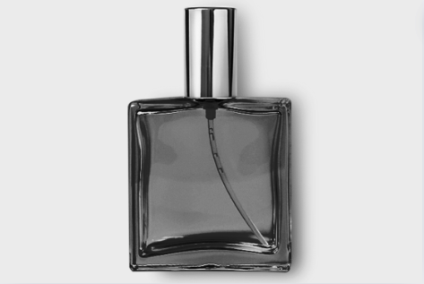

Essential tips before buying your next perfume …

1. Understand Your Skin Chemistry
Your skin chemistry is crucial in determining how a perfume will smell on you. Factors like your skin type, pH balance, and even diet can influence the scent. Testing a fragrance on your skin before buying is essential to ensure it blends well with your natural oils and doesn't cause irritation.
2. Determine the Purpose of the Fragrance
Fragrances can be broadly categorized based on their intended use: daily wear or special occasions.
-
Daily Fragrances: These are generally more subtle and refreshing. Look for scents with citrus, fresh, or clean notes. They are perfect for everyday activities and work environments where a light, non-intrusive scent is preferred.
-
Special Occasion Fragrances: These tend to be richer and more intense, featuring notes such as oriental, floral, spicy, and musky. Choose a fragrance that matches the formality and theme of the event. For formal occasions, classic or elegant scents are ideal, while festive events call for something more celebratory and bold.
3. Concentration Levels
Understanding the concentration levels of fragrances can help you make the right choice:
-
Parfum (Extrait de Parfum): This has the highest concentration of fragrance oils, making it the longest-lasting option. It’s ideal for those who want a strong scent that lasts all day.
-
Eau de Parfum: Slightly less concentrated than Parfum, this type is strong and suitable for most occasions. It provides a lasting scent without being overpowering.
-
Eau de Toilette: This has a moderate concentration and is lighter than Eau de Parfum. It’s great for everyday wear and offers a fresh, subtle fragrance.
-
Eau de Cologne: The lightest concentration, perfect for a refreshing spritz. It’s ideal for hot weather or for those who prefer a very light fragrance.
4. Understand the Fragrance Families
Fragrances are categorized into different families based on their dominant notes and characteristics. Familiarize yourself with these families to better understand your preferences:
-
Floral: Includes scents like rose, jasmine, and lily. These are often soft, romantic, and feminine.
-
Citrus: Features notes like lemon, bergamot, and grapefruit. These are fresh, light, and invigorating.
-
Woody: Contains notes like sandalwood, cedar, and vetiver. These are warm, earthy, and grounding.
-
Oriental: Includes spicy and exotic notes like vanilla, amber, and cinnamon. These are rich, warm, and opulent.
-
Fresh: Encompasses green, aquatic, and fruity notes. These are clean, crisp, and refreshing.
5. Seasonal Preferences
Consider the season when choosing a fragrance. Some scents are better suited for certain times of the year:
-
Spring: Light and floral fragrances are ideal for spring.
-
Summer: Fresh, citrus, and aquatic scents work well in the heat.
-
Fall: Warm, spicy, and woody fragrances are perfect for the cooler weather.
-
Winter: Rich, oriental, and musky scents provide warmth and depth during the colder months.
6. Longevity and Sillage
Longevity refers to how long a fragrance lasts on your skin, while sillage is the trail the scent leaves behind. Depending on your needs, you might prefer a fragrance with strong longevity and sillage or something more subtle:
-
High Longevity: Parfum and Eau de Parfum usually offer the longest-lasting scents.
-
Moderate Longevity: Eau de Toilette provides a balance of lasting power and lightness.
-
Low Longevity: Eau de Cologne offers a quick, refreshing spritz with less staying power.
7. Try Before You Buy
Always sample a fragrance before purchasing. Visit a store or take part in our Subscription Program exclusively available to our AmeriFrag Club members. Walk around and give it time to develop. Fragrances have top, middle, and base notes that evolve over time, so it’s important to experience the full development of the scent.
8. Consider Your Environment
Think about where you’ll be wearing the fragrance. Strong scents might be overwhelming in close quarters or professional settings, while lighter, fresher scents are more versatile.
9. Packaging and Presentation
While the scent is the most important factor, the packaging can also influence your choice. Consider if the bottle design and size are practical for your lifestyle. Travel-sized options might be more convenient for on-the-go use.
10. Allergies and Sensitivities
Consider any allergies or sensitivities you might have when choosing a fragrance. Some people are sensitive to certain ingredients commonly found in perfumes, such as alcohol or specific essential oils. If you have known allergies, carefully check the ingredient list. Opt for hypoallergenic or natural fragrances if you have sensitive skin or are prone to allergic reactions.
By following these tips, you can ensure that your perfume enhances your presence and leaves a memorable impression. Selecting a fragrance that suits your personal style and needs will make your scent pleasant and inviting.